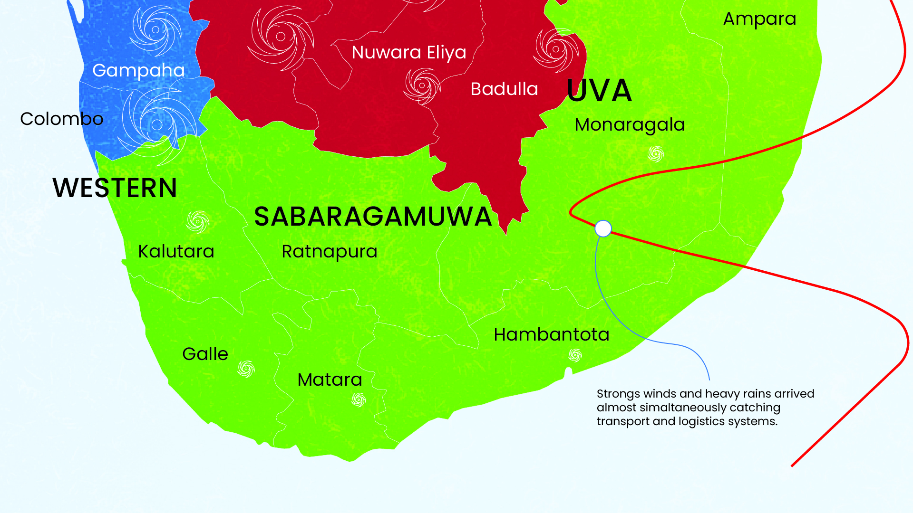
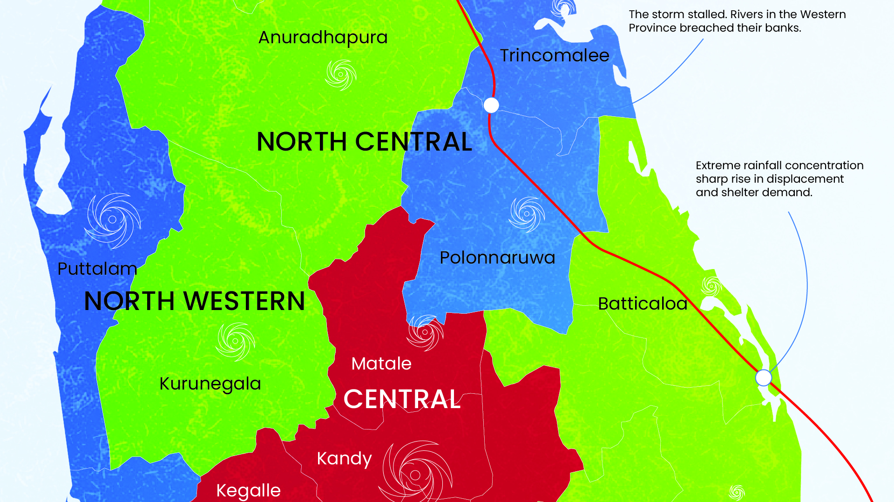
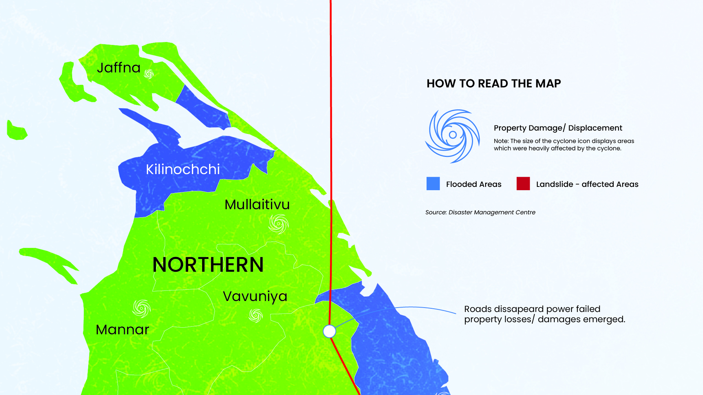

COLOMBO, Sri Lanka — Cyclone Ditwah was not merely a weather event; it was a stress test that the nation's infrastructure failed. Making landfall on November 28, the cyclone brought winds of 120km/h to the Eastern Province before stalling over the wet zone.
While international media focused on the urban flooding in Colombo, data from the Disaster Management Centre (DMC) reveals a more complex bifurcated disaster. In the west, the crisis was defined by volume—millions of cubic meters of water inundating the Kelani River basin. In the central highlands, the crisis was geological, with saturated soil triggering fatal landslides in Kandy and Badulla.
The immediate human toll—646 confirmed fatalities—is only the first chapter. As floodwaters recede, a "secondary disaster" of economic collapse is now unfolding in the agricultural heartlands.
A detailed view of the disaster zones, including flood extents in the West and landslide warnings in the Central Highlands.

Source: Himawari-8 / NASA


The system makes landfall at 04:00 local time. The immediate impact is the severance of logistics chains.
According to Flash Update No. 01, 206 major arterial roads are blocked within the first 12 hours. This isolation prevents the pre-positioning of aid in the interior.
As the cyclone stalls, it dumps unprecedented rainfall on the Western slopes. The Kelani River bursts its banks.
In Gampaha and Colombo, displacement skyrockets. Government safety centers are overwhelmed, recording a peak capacity of 233,000 individuals.
While the coast battles water, the mountains battle gravity. In Kandy, Matale, and Badulla, the soil saturation point is exceeded.
This phase marks the deadliest period. Landslides claim the majority of the 646 confirmed fatalities. Search and rescue is hampered by complex terrain.
Two months on, 170,000 people remain displaced. The focus shifts from survival to the massive challenge of rebuilding 114,000 damaged homes.
Beyond the infrastructure damage lies a less visible crisis affecting the most vulnerable demographics: children and displaced women.
Situation Report #6 highlights a disturbing trend in safety centers: the lack of gender separation has led to increased protection risks. Overcrowded centers lack privacy, creating a secondary crisis for women and girls.
To understand the progression of the disaster, we analyzed the daily casualty and displacement reports from all 25 districts.
While the floodwaters have receded, a silent crisis is emerging in the agricultural sector. The cyclone struck during the critical planting window for the "Maha" rice season.
According to the FAO household survey, 30% of agricultural households experienced crop damage. 70,000 smallholder farmers have lost their livelihood foundation.
This 6% funding statistic for agriculture suggests that while donors are willing to feed the hungry today, there is little investment in preventing hunger tomorrow.